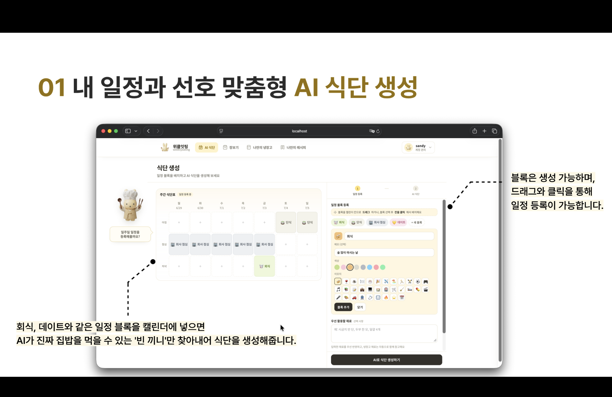
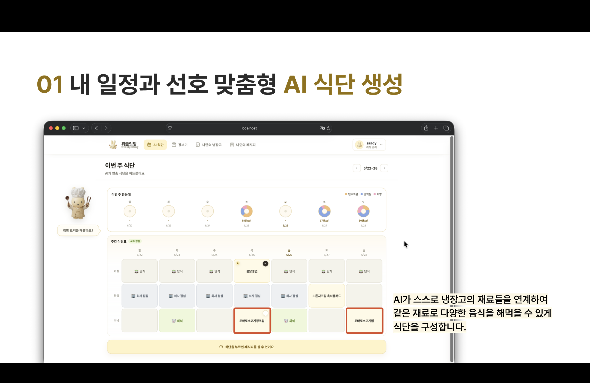
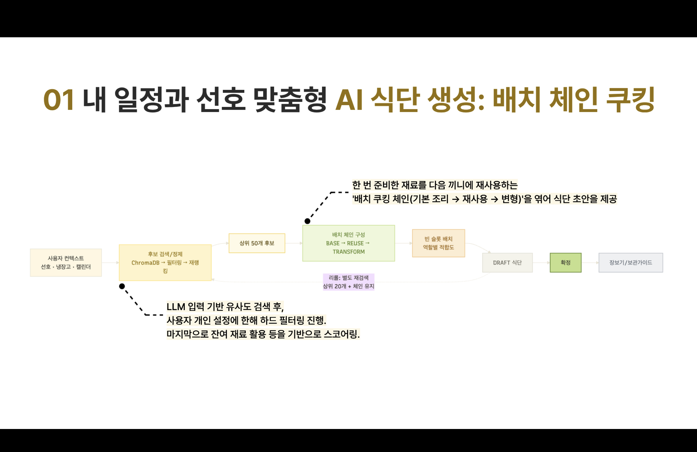
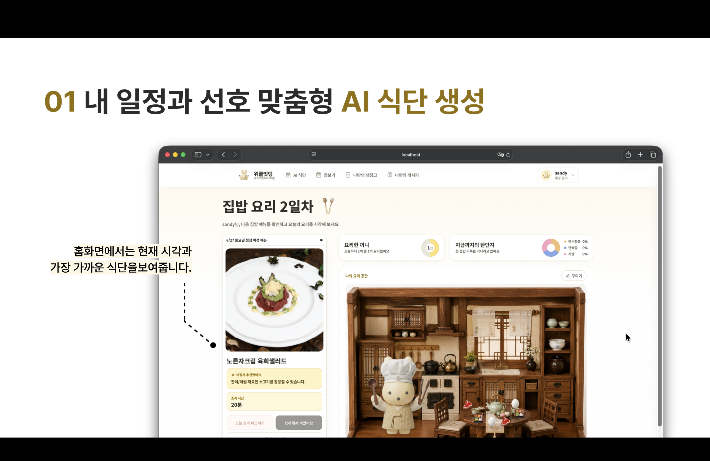
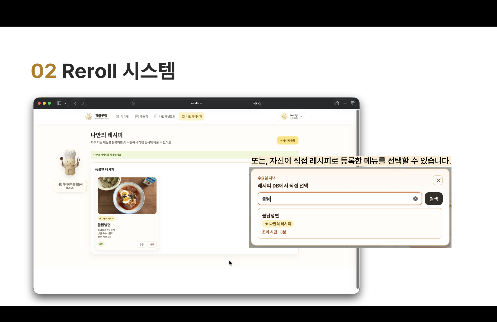

01
Weekly Eating
20개본인 구현 API5주개발 기간
프로젝트 상세 보기아래 탭을 선택해 내용을 확인하세요 ↓
WEEKLY EATING일정과 냉장고를 반영해
일정과 냉장고를 반영해
일주일 식사를 한 번에 계획하는 서비스
“이번 주엔 뭐 먹지?”
매번 메뉴를 고민하고, 재료 확인과 장보기까지 따로 해야 하는 불편에서 시작했습니다.
일정이 불규칙한 자취생
바쁜 일정 속에서도 식사를 계획하고 냉장고 재료를 낭비 없이 쓰고 싶은 사용자가 대상입니다.
식단부터 냉장고까지
AI 주간 식단 · 메뉴 재추천 · 레시피 · 장바구니 · 냉장고와 유통기한 관리
흩어진 정보를 하나로 연결
일정·취향·보유 재료를 식단 생성에 반영하고, 결과를 장보기와 식재료 관리까지 이어지게 했습니다.
MY ROLE인증부터 식단·장보기·냉장고까지 백엔드 API 20개 구현
FEATURE GALLERY일정·선호 맞춤 AI 식단
01/ 10









Java 17Spring Boot 3.2Spring Security · JWT(JSON Web Token)MyBatisMySQL 8.0
BACKEND DESIGN
보안과 AI 응답 신뢰성을 저장 이전 단계에서 검증했습니다.
01 · AUTHORIZATION리소스 소유권
검증 설계IDOR(Insecure Direct Object Reference) 예방
검증 설계IDOR(Insecure Direct Object Reference) 예방
PROBLEMJWT 유효 ≠ 소유권
JWT(JSON Web Token)는 로그인 사용자의 신원만 확인하며, URL의 리소스 ID는 변경할 수 있습니다.
DECISION인증 ≠ 인가
신원 확인 후 접근 권한을 별도로 판단했습니다.
IMPLEMENTuserId + resourceId
JWT subject의 사용자 ID를 조회 조건에 추가했습니다.
RESULT사용자별 데이터 격리
미존재·타인 소유 리소스 모두 404로 응답했습니다.
02 · AI RELIABILITYAI 응답
신뢰성 검증저장 전 검증
신뢰성 검증저장 전 검증
PROBLEMHTTP 200 ≠ 정상 식단
통신 성공이 추천 결과의 유효성을 보장하지 않습니다.
DECISION통신 성공 ≠ 비즈니스 성공
응답 구조와 서비스 규칙을 분리했습니다.
IMPLEMENT2단계 Validation
검증을 모두 통과한 결과만 저장했습니다.
1 · CLIENT LAYER응답 구조 검증
→2xx · success · data · items
2 · SERVICE LAYER도메인 규칙 검증
슬롯 · 레시피 · 조리 시간 · 알레르기 · 중복
RESULT잘못된 추천 저장 차단
X-Request-Id로 두 서버의 로그를 연결했습니다.
Weekly Eating Demo서비스 주요 기능 시연
2026